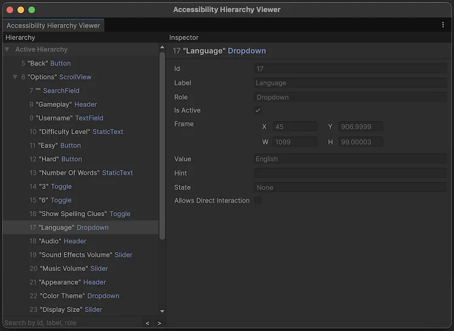

The Accessibility module bridges your application with platform accessibility APIs. It helps you translate your application’s interfaces into hierarchical data structures that screen readers understand and identify the user’s accessibility preferences so that you can adapt your user experience accordingly.
The Accessibility module consists of the following core components:
AssistiveSupport: Main interface to the screen reader support APIsAccessibilityHierarchy: Hierarchical data model describing visual elements to screen readersAccessibilityNode: Data structure representing an individual visual element that needs to be accessible to screen reader usersIAccessibilityNotificationDispatcher: Methods for sending notifications to screen readers (implemented in AssistiveSupport)AccessibilitySettings: Access point to system accessibility settings on the user’s deviceVisionUtility: Palette of colors distinguishable for colorblind usersThese are the key concepts to understand when working with the Accessibility module:
Think of the accessibility hierarchy as a parallel structure that mirrors your scene hierarchy in terms that screen readers understand. Your visual elements exist in Unity’s scene hierarchy. The accessibility hierarchy describes that content in screen reader terms.
Each visual element in your application’s UI or game world that needs to be accessible to screen readers must have a corresponding accessibility node.
Accessibility nodes have properties like label, role, value, state, and relationships to other nodes. When you update the properties of a visual element, also update its corresponding accessibility node.
Screen readers traverse the accessibility hierarchy. Parent-child relationships affect focus order and element grouping. Flatten hierarchies where possible. Deeply nested structures make navigation difficult for screen reader users.
Notify the screen reader of significant changes via accessibility notifications. This keeps the screen reader in sync with your application’s interface.
You write against Unity’s Accessibility API once. The module handles platform variations. Avoid platform-specific workarounds unless necessary.
Update: Batch processing of accessibility events received from the operating systemLateUpdate: Automatic refresh of accessibility node frames if the application window was previously moved or resizedThe Accessibility module does not impact performance for users without a screen reader enabled, as most of its operations only function when a screen reader is detected.
The module triggers platform updates only when the user activates a screen reader or when you modify accessibility nodes or send accessibility notifications while a screen reader is active.
For typical UIs, accessibility hierarchy updates have minimal performance impact.
The following factors affect performance:
Follow these best practices to minimize performance impact:
Unity’s Accessibility Hierarchy Viewer (Window > Accessibility > Hierarchy Viewer) helps you visualize your active accessibility hierarchy.
While in Play mode, the Accessibility Hierarchy Viewer shows:

Use the Accessibility Hierarchy Viewer during development to verify your accessibility implementation. Compare the accessibility hierarchy to your application’s interface. Every interactive or informative element must have a corresponding accessibility node in the hierarchy with appropriate properties. When your UI or game world updates, the accessibility hierarchy must reflect those changes.
Test your accessibility implementation in the Unity Editor in Play mode, then build to a device and test with the target screen reader.